My favorite joke about sensors is a variant of Segal's law.
If you have a watch you always know what time it is. If you have two watches, you're never sure.
It's depressingly applicable to electromechanical systems. Once you can read a sensor, you suddenly have ten thousand watches.
Sensors aren't perfect
You may not be aware of it, but when you have just one watch you tend to have a particular mental model of how it's related to the actual time.
Measuring a thing introduces errors and imperfections. This is immediately apparent when working with temperature. If I have one thermometer, I can confidently report that I know what the temperature is.
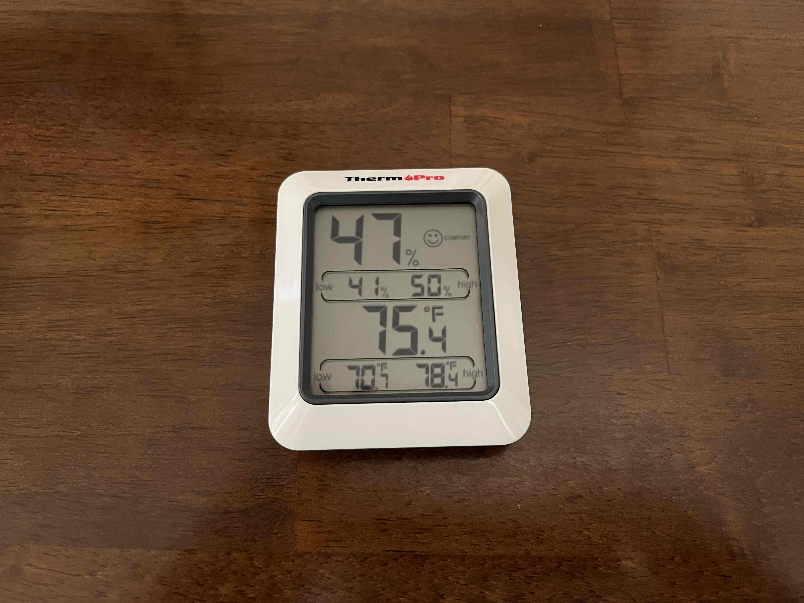
But if I have five of them, I'm no longer sure.
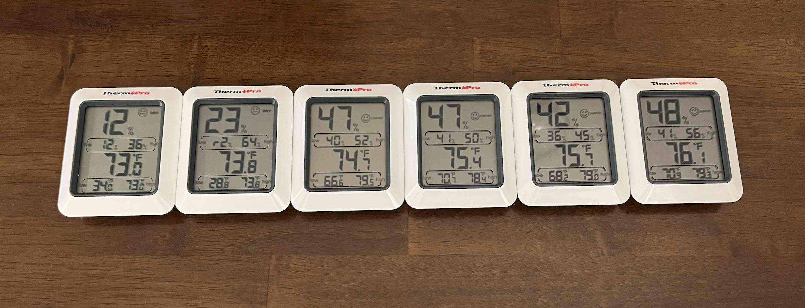
Presumably all these thermometers are sitting at the same temperature, inches apart on the same desk in the same room. Some weirdness has been introduced in the process of measuring it though.
This introduces some troubling questions. Where is this weirdness coming from? Can we correct for it? And more fundamentally, what even is the real temperature?
We'll spend the rest of this post trying to answer them.
Connecting to an Arduino
To really scale up our investigation of measurement, we're going to
place an order for a million thermometers connect a computer
to a digital thermometer.
The Arduino UNO Wifi Rev 2
is a board containing, among other things, a microcontroller and a temperature
sensor. If this is your first exposure to Arduino and you'd like to get
started with your own, you can
take a side road here
and come back.
After plugging in the Arduino Uno Wi-Fi Rev2, we’ll need to search for and download the library that lets us measure temperature. The temperature sensor is part of an inertial measurement unit (IMU) chip tucked unobtrusively into the cityscape of the board.
The chip is the LSM6DS3 from a company called ST and
the library is called Arduino_LSM6DS3. To download it to the Arduino IDE,
navigate to Tools -> Manage Libraries...
and search for "LSM6" in the dialog.
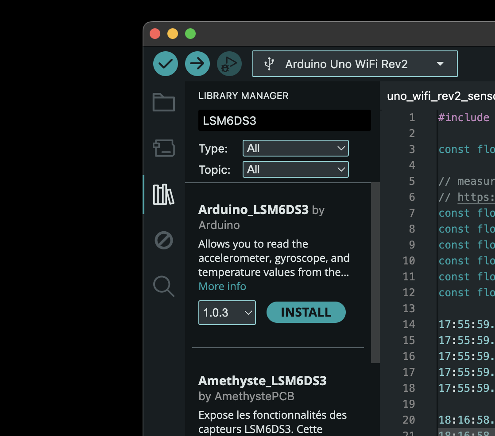
Click Install and we're all set up.
The IMU does several cool things, including measure acceleration side-to-side (X), front-to-back (Y), and up-and-down (Z). It also measures how fast the board is rotating in all three principal directions pitch (X), roll (Y), and yaw (Z). Yaw is the motion of shaking your head No, pitch is shaking your head Yes, and roll is tilting your head side to side like a begging puppy. Because the tiny mechanisms that make these measurements are temperature sensitive, the board includes its own temperature sensor, which is then used to make some adjustments. Lucky for us, we can also query it directly.
The capabilities that this library opens up our listed in the application programmer interface (API) documentation . This is a list of the publicly available functions of the library. When you develop a library and include a function description in the API documentation, you are implying that it will always be available, or at the very least that it won’t change. And in the event that you do need to make a change to the official API, you do it with a lot of communication and hoopla.
It's worth calling out that the links for Arduino_LSM6DS3 library information
in the Arduino document library are broken at the moment I'm writing this.
That may be because they are a few years old or may be because someone
made a change somewhere in the documentation generation code that broke them.
Luckily, since Arduino is an open source project, we can go right to
the source—the Github repository
where
it's all kept. That has the added bonus of never getting stale because
it is the ground truth.
You may notice in the list of functions available that there is no way to access temperature from the API. Some additional searches show that there is a way get temperature using in the library, it’s just not included in the official documentation. Using undocumented aspects of a library is a bit of a gamble. They have no implied promise of consistency or support. But since the only customers that are going to depend on the code we write are ourselves, we are in a good position to acknowledge and accept this risk. For what it’s worth, building on undocumented behavior happens a lot.

The function we want is called readTemperature(), and our searches
also pulled up some example code for how to use it.
#include <Arduino_LSM6DS3.h>
void setup() { Serial.begin(9600); while (!Serial);
if (!IMU.begin()) { Serial.println("Failed to initialize IMU!");
while (1); }
Serial.print("Temperature sensor sample rate = "); Serial.print(IMU.temperatureSampleRate()); Serial.println(" Hz"); Serial.println(); Serial.println("Temperature reading in degrees C"); }
void loop() { float t;
if (IMU.temperatureAvailable()) { // after IMU.readTemperature() returns, t will contain the temperature reading IMU.readTemperature(t);
Serial.println(t); } }
The most important things to take away for our own code are:
Include the library header file.
#include <Arduino_LSM6DS3.h>
Initialize the IMU in the setup() block.
IMU.begin()
Then read the temperature as often as we want in the loop() block.
Each time, first check whether there is a temperature measurement available.
if (IMU.temperatureAvailable()) {...
Then get a reading.
IMU.readTemperature(t);
This is the heart of the temperature-getting operation.
IMU.readTemperature(t) takes a single input argument, a float`,
whose value it modifies to hold the temperature in degrees C.
The Serial.print() function lets us keep an eye on the result,
as long as we keep the USB cable connected to the board. The line
Serial.begin(9600);
kicks off a serial bus connection between the laptop and the board
at baud rate (bits per second) of 9600. To watch what they talk about
on this connection, we need a serial port monitor. Luckily the Arduino IDE
comes with one built right in. To use it select Tools -> Serial Monitor
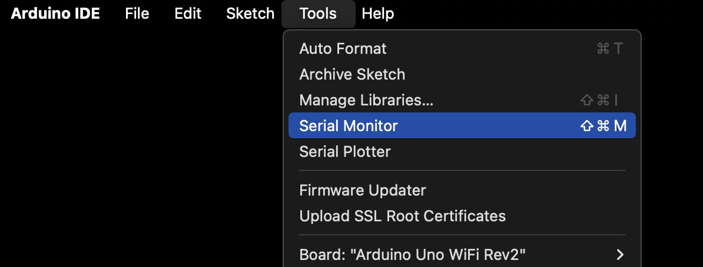
and on the far right of the Serial Monitor window that pops up,
make sure that 9600 baud is selected in the dropdown menu.
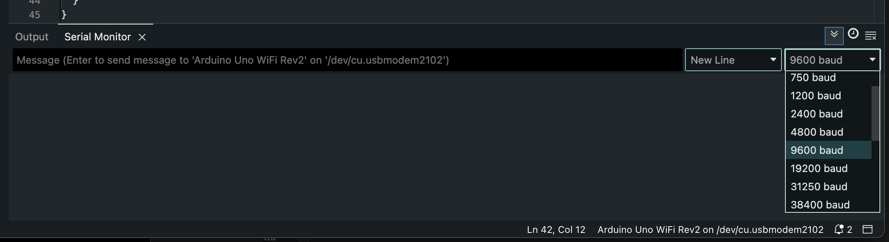
And now we’re ready to take a measurement. Here's the actual code I'm using.
Reading the temperature
After clicking the compile-and-upload arrow this line shows up in the Serial Monitor
20.832 (69.498)
And just like that, we know what temperature the world is at in this location and at this time! About 20.8 degrees Celsius or 69.5 degrees Farenheit. It is consistent with the most straightforward interpretation of measurement we can come up with.
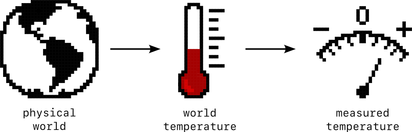
The fun begins when we take another measurement ten seconds later.
21.281 (70.306)
Immediately panic sets in.
Did we change something?
Did the temperature really go up?
Was it wrong the first time?
Was it wrong the second time?
What is wrong both times???
There's no way to know. All we know is that we took one measurement and then we took another, and they were different numbers. This suggests that the measurement process is sophisticated enough to merit special consideration.
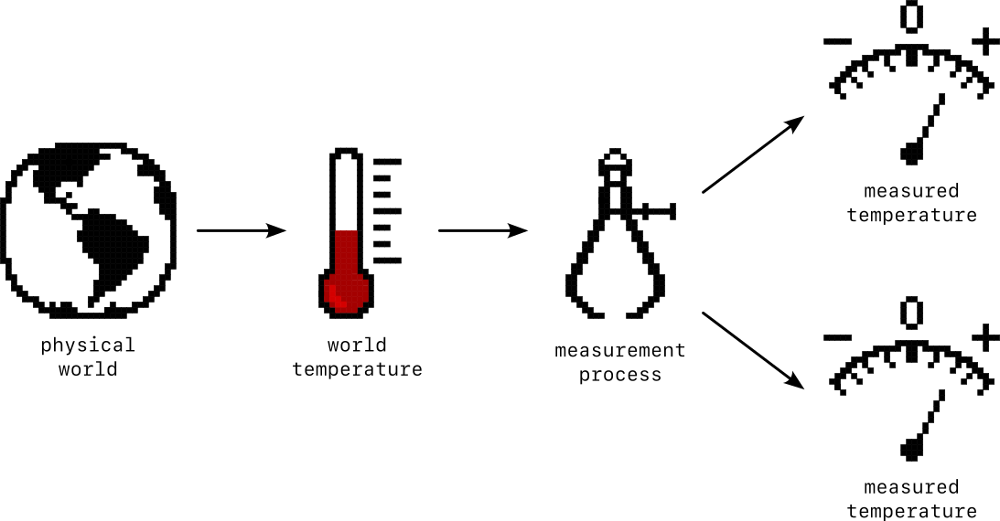
Going deeper
It only gets worse as we collect additional measurements every few seconds.
21.512 (70.721) 21.832 (71.298) 22.047 (71.684) 22.410 (72.338) 22.805 (73.048) 22.957 (73.323) 23.223 (73.801) 23.434 (74.180) 23.672 (74.609) 23.898 (75.017) 24.133 (75.439) 24.363 (75.854) 24.785 (76.613) 24.441 (75.995) 24.492 (76.086) 24.711 (76.480) 24.770 (76.585) 24.977 (76.958) 25.461 (77.830)
The temperature keeps going up. We've watched it climb almost 5°C (9°F) in just a few minutes and there's no sign that it's slowing down.
With an extended pattern like this it's really helpful to be able
to take regular readings and look at how they change over time.
There is
a tweaked version of the code
that reads the temperature on a regular cadence, and there is the Serial Plotter
a convenient Arduino IDE display of any value that gets regularly
sent to the Serial Monitor. Open the Serial Plotter via Tools ->
Serial Plotter.
Starting from an Arduino that had been powered down overnight, reading the temperature every 10 seconds, the first 8 minutes (48 readings) show a steady climb over almost 3°C.
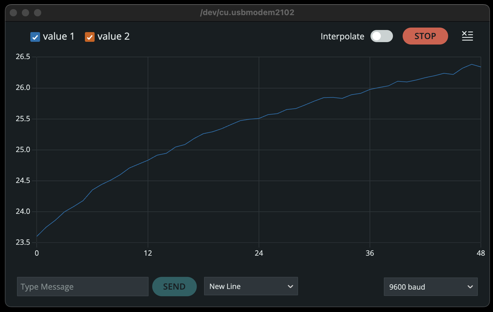
One limitation of the Serial Plotter is that it only plots the 50 most recent data points. The next couple of screenshots extend this curve over about 24 minutes, but the y-axis scale changes on each one.
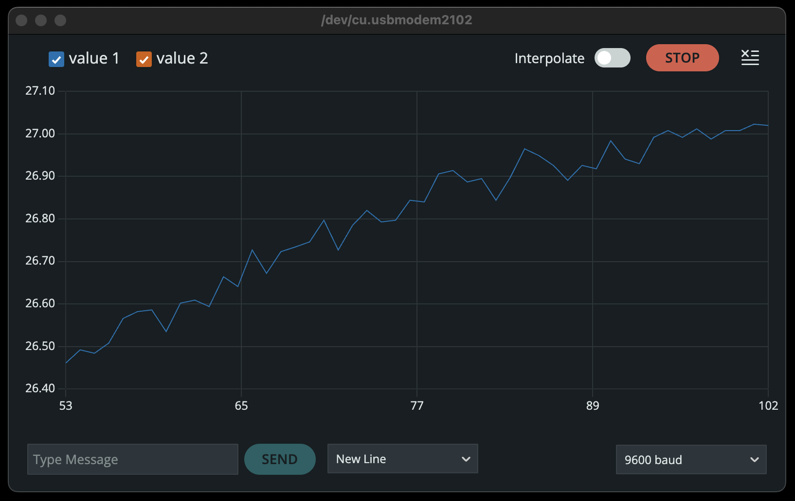
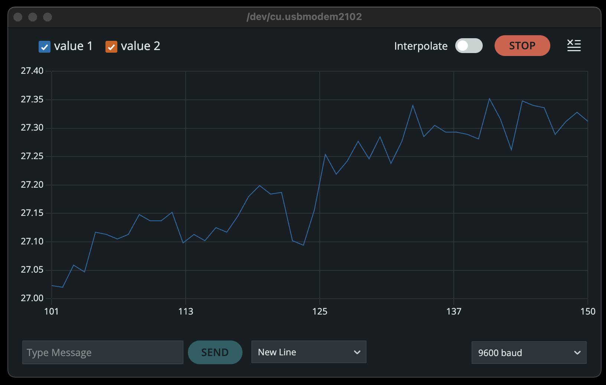
This pattern gives us a solid lead. For some reason the reported temperature is definitely going up, and not just a little bit. This is exciting! It is a clear signal that something is going on. We just don't know what.
Modeling measurement
A cynical but pragmatic view of science is that its goal is to explain what we see. A good theory explains everything we see. (And Occam's Razor suggests that it's good practice to go with the simplest explanation we can come up with.) Another word for such an explanation is a model, and the most important ingredients in a good model are careful observations.
To get some more observations for our model, I set the stage more carefully. In the quiet of the morning with no air conditioning, after the Arduino had cooled all night, I started collecting measurements every 20 seconds. Due to operator error, I lost the first few measurements on the plot, but they began close to 21.5°C.
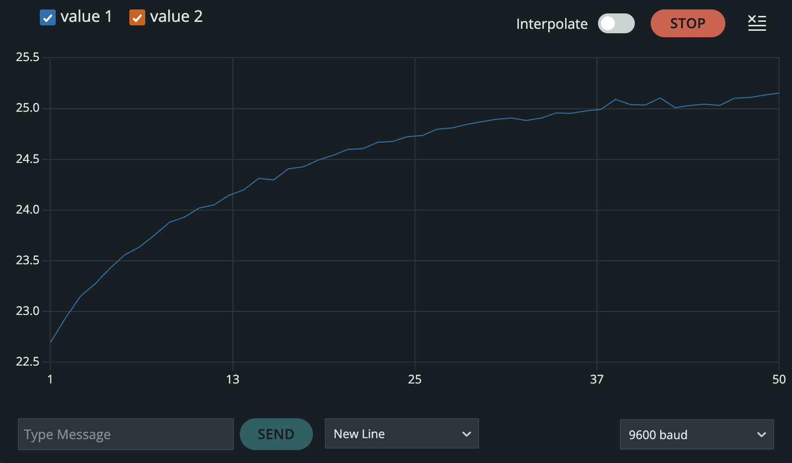
This curve tells us a lot, and helps us to start building our measurement model. The steep start, easing into a plateau is a common curve in systems that get hit with a sudden change but take a while to adjust to it. Eventually that line will flatten out and settle in to the new normal.
This raises the question of What changed? The only change I made was to plug in the Arduino and start collecting measurements. Using the inductive (storytelling) superpowers of a human brain, we can connect the unusual events together—plugging in the Arduino probably caused the temperature to rise.
Although these aren't obviously connected, the relationship does make sense after more careful consideration. Powering up the Arduino sends electrical current through the IMU chip and through the microprocessor that sits just a couple of centimeters away. Current heats them both up a little bit. And unlike devices intended to measure air temperature, the temperature sensor of the IMU sits isolated from the air, on a piece of silicon with a lot of transistors and resistors that are each generating a small amount of heat. These will cause the temperature of the integrated circuit package to rise, until it gets warmer than the surrounding air, enough so that the difference in temperatures helps it dump its extra heat.
With this picture of what's going on, we can update our measurement model.
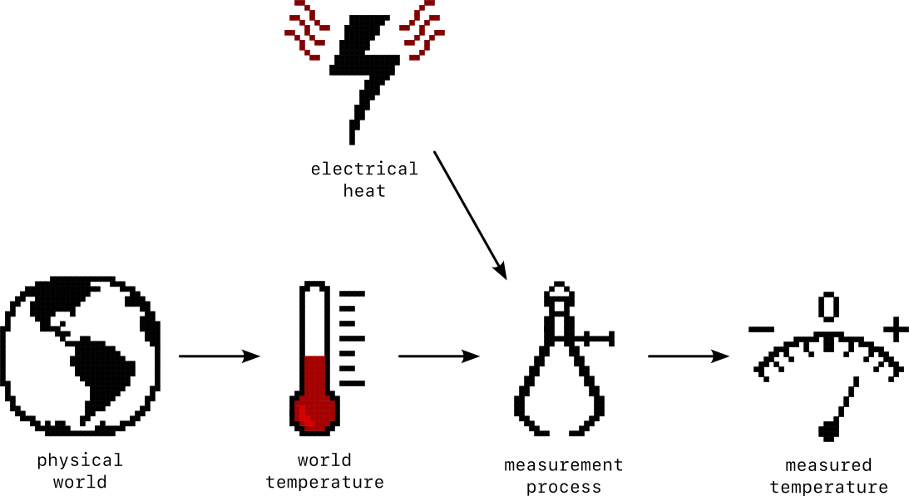
We could go down the rabbit hole of explicitly modeling the temperature change due to internal heating of the chip and how quickly it changes over time, explaining the precise curve of the temperature readings as they climb in an exponential decay that asymptomptotically approaches their new steady state, but that way madness lies. And the field of heat transfer.
For our purposes, it's enough to measure the difference that it settles in at. How much warmer does the chip need to be than its surroundings to be at a stable temperature? For comparison, I placed a collection of supposedly identical thermometers around the Arduino. They apparently have their own measurement processes going on, because after sitting in the same location all night they give slightly different readings. For comparing with the Arduino, it will be enough to take the middle value, the median, and treat that as the "world temperature".
After running this collection process for an hour, this temperature difference settles in to 3.9°C (7.0°F). Making another run where temperature is measured ten times per second gives the same result. This suggests that the heating comes from having the Arduino powered on and is not sensitive to computational load, at least not within the accuracy of my air temperature sensors.
This measurement model is specific enough that it can be written in math.
where
This is a very useful temperature model. It starts to get us a somewhat accurate way to connect measured temperature to the actual temperature in the physical world.
Convection
During the process of characterizing the internal heating, another measurement quirk emerged when the air conditioner kicked on and off.
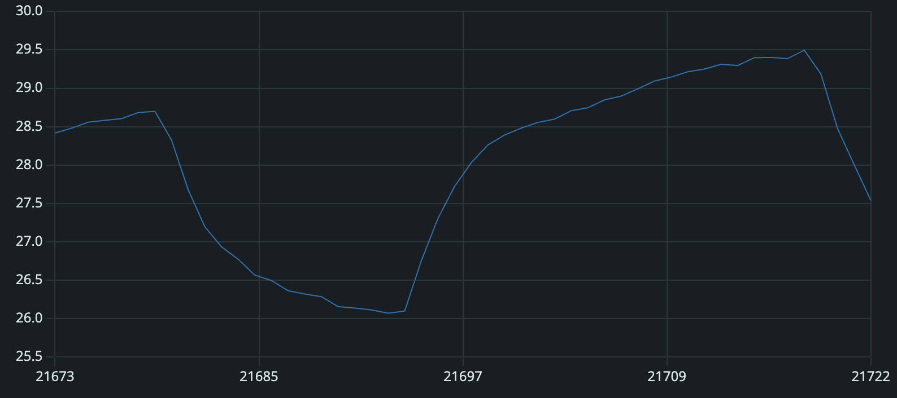
The 3.9°C difference between the room air temperature and the measured temperature persisted, except for when the air conditioning turned on. That caused a barely perceptible breeze to blow, which apparently helped the chip dissipate its heat more quickly and brought the temperature difference down to 2.0°C. When the air is still the chip builds up a little bubble of warmed air around itself that serves to insulate it and lets its temperature rise higher than the air in the room around it. But when the air conditioner runs, the gentle breeze keeps displacing this bubble of air as fast as it can form. This process is called convection and is the reason there are fans in our laptops.
Adding the effect of convection makes our measurement model even more accurate (and complex).
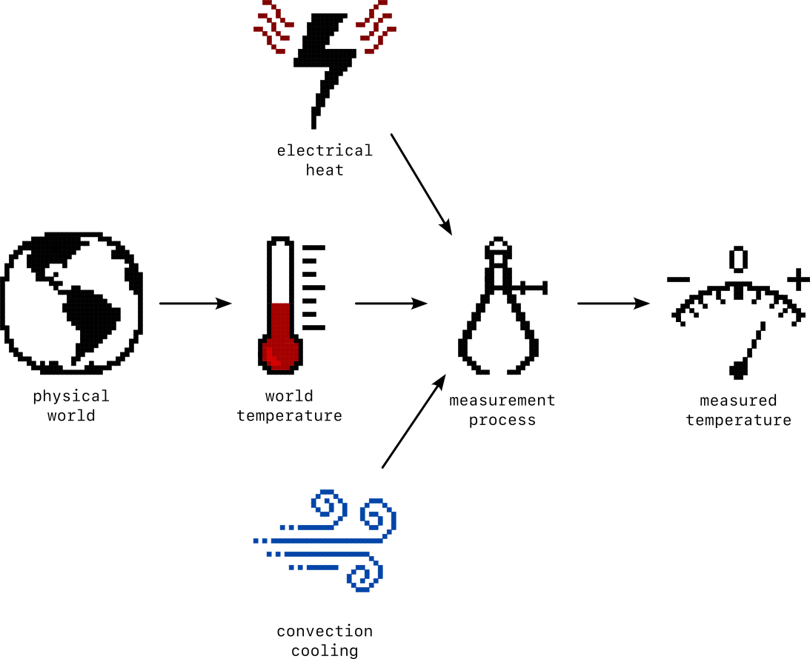
The new equation for the measurement model includes a convection term.
where
A more accurate model of convection would include the speed of the air blowing over the IC and the temperature difference between the two, but that's more detail than we need to get a good temperature estimate in this particular situation. (Heat transfer is sneakily tryinging to get back into the conversation here.)
Noise
At this point, the measurement model does a pretty good job capturing the temperature trends, but we have pointedly ignored the fact that there is always a jaggedness to the measurement line. After we let the chip warm up and make sure there is no air conditioning, the measurements should be almost perfectly flat, but still they jump around by almost a degree.
These measurements are 120 seconds apart. Maybe the temperature really is jumping around that quickly? If it is, we can speed up the measurements and see whether they turn into smooth up-and-down wiggles.
At one per second they do not.
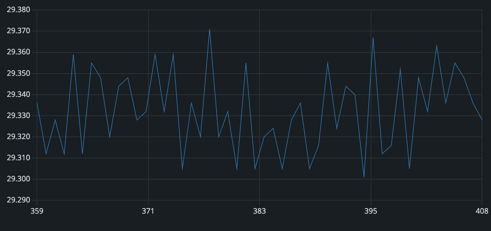
At ten per second they still don't.
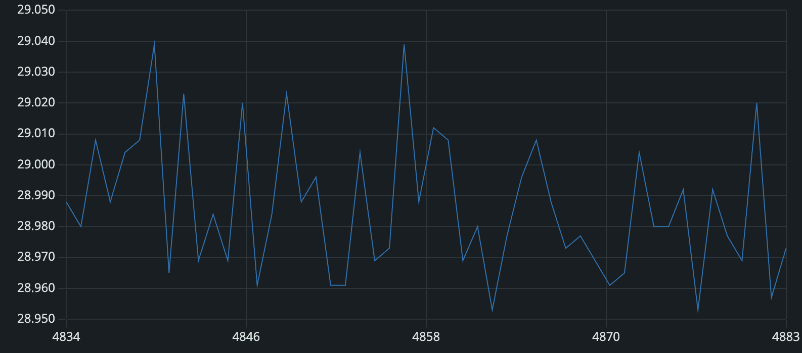
The sampling rate of for temp on the chip is 52 Hz. So that's as fast as we can check. Even at that speed they do not turn smooth.
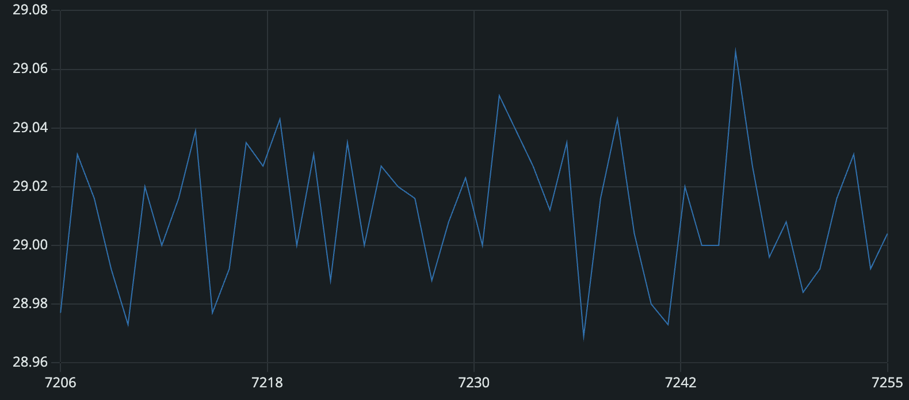
Instead, it seems that there is some inherent jitter, some inaccuracy that is built in to the measurement. The technical term for this is noise. The philosophical term for this is aleatoric uncertainty . The word is derived from the Latin for dice indicating that there are some wiggles in the chart which are unavoidably random, a roll of the dice.
Filtering
More noise makes it harder to accurately read the underlying signal. Reducing noise is the subject of much study in electrical engineering and signal processing.
We'll take a shallow dip into this bag of tricks for this by making a low pass filter. This particular approach goes by many names. It's a weighted average, with higher weights given to more recent measurements. It's a leaky integrator. It's a first-order low-pass infinite impulse response discrete-time filter. It's the easiest filter to implement so it gets used a lot in practical systems.
To low-pass filter the temperature, each new measurement gets combined with the running estimate in a lop-sided ratio. That ratio can be thought of as an adaptation rate, say 0.1. Then each new measurement gets multiplied by 0.1 and added to the previous estimate, multiplied by 0.9, to get the new estimate.
Expressed as an equation
In the C++ Arduino code it looks like this.
temp_filtered = (1.0 - adaptation_rate) * temp_filtered
+ adaptation_rate * temp_measured;
The effect of the filtering can be seen when overlaying the raw measured temperature with the filtered temperature.
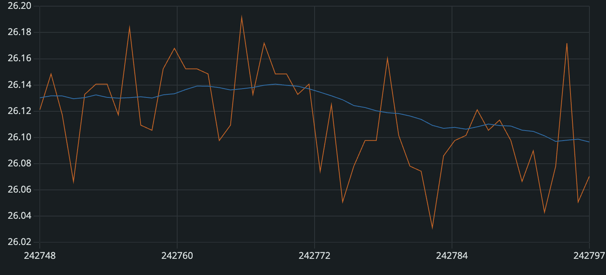
The raw temperature measurement is a jagged line jumping up and down by a full degree C peak-to-peak. The filtered temperature tracks changes much more smoothly and slowly, jittering by less than a hundredth of a degree. It's easy to imagine that it gets closer to measuring the actual world temperature, and that it removes a lot of the noise introduced by our measurement process.
This may be true, but it comes at a cost. Filtering in real time like this introduces a lag, a time delay. This becomes clear to see when introcducing a sudden change, like when I put my hand over the temperature measurement IC.
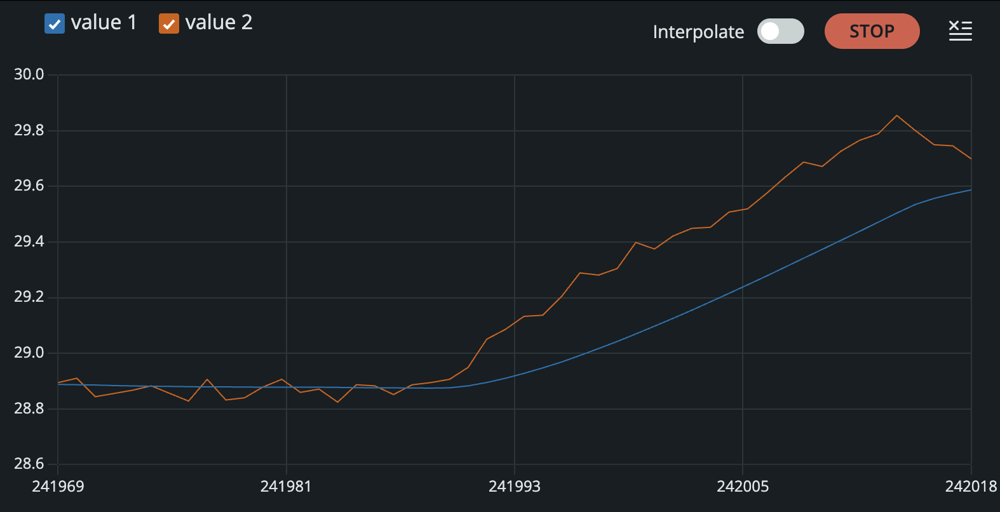
The filtered and raw temperature traces both begin at 28.9°C, but when I put my hand over the board, creating a space for heat to build up, it starts to rise. The rise is immediately visible in the raw measurements, but the filtered measurements lag by about 20 seconds. Because the filter is a kind of moving average, it combines new measurements with everything that has come before. That helps it to be super chill—to reject noisy up and down jumps—but it also makes it slow to respond to legitimate shifts in the actual temperature. Those shifts have to persist for a while before they can break through the noise-supression effects of the filtering. For our purposes, we're interested in larger, sustained temperature changes, so a 20 second lag is acceptable.
This post has covered a lot of ground, from connecting to the Arduino and starting to collect temperature measurements to refining those down to a high degree of accuracy. Now we're ready to start doing something interesting with the data we're collecting.